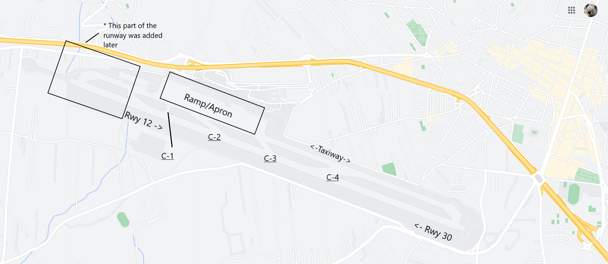

The deadliest aviation accident: the Tenerife Disaster
Safety
17 June 2021
The deadliest air crash in the world happened before the aircraft even got into the air.
On the morning of March 27, 1977, a bomb exploded at Gran Canaria Airport in Las Palmas. Because the local authorities feared that a second bomb would go off, the airport was closed and evacuated, and did not open until 3:00 PM later that day. Meanwhile, the flights that were supposed to land at Las Palmas were diverted to different airports, the closest one being Tenerife Airport, on another Canary Island.
Two of these flights, Pan American flight 1736, and KLM flight 4805, both operated by Boeing 747s, happened to have diverted to Tenerife. After a lengthy delay, they were ready for departure in the early evening, around 4:30 PM.
At 4:46, KLM contacts the ATC tower and requests permission to taxi. They are told to backtrack on runway 12 until the next available exit, then taxi on the parallel taxiway to runway 30 for takeoff. However, the message is misunderstood, so ATC amends their clearance, telling them instead to backtrack the entire length of the runway and make a 180 degree turn at the end to take off on runway 30.
Runways are numbered based on their magnetic heading, with the three digit number (between 0-360, with 360 degrees being North) rounded to the nearest ten, then with the last digit truncated. This means that each physical runway is actually two, since aircraft can take off in either direction. This is a Google Maps image of Tenerife airport, with the runways and intersections labeled. Map data © 2021 Inst. Geogr. Nacional, Google.
At 5:02, the Pan Am aircraft is also ready for departure. ATC tells them to taxi on runway 12 and exit the runway at the third intersection, then taxi on the taxiway to runway 30 for takeoff. However, the controller did not specify which specific intersection to exit at (C-3 or C-4), which may have caused some confusion.
At 5:05, KLM advises Tower that they are ready for departure. See the specific interaction transcribed:
KLM: The KLM four eight zero five is now ready for takeoff and we are waiting for our ATC clearance
Tower: KLM eight seven zero five you are cleared to the Papa Beacon, climb to and maintain flight level nine zero, right turn after takeoff, proceed with heading four zero until intercepting the three two five radial from Las Palmas VOR
KLM: ah - Roger, sir, we are cleared to the Papa beacon, flight level nine zero until intercepting the three two five. We are now (at takeoff) [There is a short squeal heard after this transmission]
Tower: OK… stand by for takeoff, I will call you.
Pan Am: Clipper one seven three six.
Tower: ah - papa alpha one seven three six report the runway clear.
Pan Am: ok, will report when we're clear.
Tower: Thank you.
This is the final ATC transmission before the accident. No eyewitnesses see the accident either.
KLM begins its takeoff roll at 5:06, disobeying the controller's instruction to stand by. At this point, Pan Am is still taxiing down the runway. Before they began the takeoff roll, the flight engineer asks the captain if the Pan Am aircraft was clear of the runway; the captain responds with an emphatic "oh, yes".
When Pan Am sees the KLM aircraft hurtling towards them, they attempt to turn off the runway, but there isn't enough time for them to completely vacate the runway. The KLM aircraft is traveling much too fast to stop in time, but too slow to get airborne, which is what they tried to do. The pilots rotated early, causing a tailstrike. The KLM aircraft hit the side of the Pan Am aircraft, and both burst into flames. A total of 583 died from the accident, though 70 survived with nonfatal injuries.
In aviation, experts agree that catastrophic accidents like these do not occur due to one small or large mistake; rather, there are a multitude of factors that snowball, compounding on each other until an accident happens. Let's take a look at the factors that contributed to this accident:
- Weather: it was extremely foggy that day, and there was mist and low clouds. The visibility was so low, in fact, that the aircraft could not be seen taxiing from the tower. This also meant that the aircraft had less time to react because they saw each other so late.
- Traffic: because Gran Canaria airport had closed earlier that day and many flights were diverted to Tenerife, there was a considerable amount of congestion at the airport. Part of the parallel taxiway had been closed down because overflow aircraft were parked there, which is why it was necessary for aircraft to be taxiing on the runway in the first place.
- ATC Communications: having a standardized set of language conventions is critical in aviation, as it allows for consistency in communication and understanding by all pilots and controllers around the world. Here, non-standard phraseology was used, which could have caused confusion. For example, when the KLM captain says "we are at takeoff", it is a nonstandard phrase and the meaning is actually rather ambiguous. Are they ready for takeoff? Are they acknowledging a takeoff clearance? Are they simply announcing that they are taking off? In the latter two cases, they never received a takeoff clearance to acknowledge, and pilots do not typically announce that they are taking off. In ATC communications, special attention is given to the word "takeoff" in particular - controllers and pilots are encouraged to avoid using the word unless explicitly and deliberately giving or accepting a takeoff clearance, in which case the entire phrase "cleared for takeoff" should be used. Another minor issue in this case was that ATC didn't give the Pan Am aircraft a specific intersection to leave at, instead relying on a relative landmark (the third exit, rather than Intersection C-3). However, this wasn't very relevant since Pan Am was still taxiing on the runway when the accident occured.
- Fatigue: at the time a few years before the accident, the captain of a Dutch aircraft was allowed to extend the duty time of the crewmembers at their discretion in the event of a delay or other circumstance that resulted in the crew going over the legally allowed working period without rest. However, the law had been recently changed so that the captain must contact the company to see how long the crew's duty time could be extended. In this case, the crew had no idea how much longer they would be working, which became a subconscious psychological factor. Additionally, their day had not gone very well - the threat of terrorism (the bomb at Gran Canaria) along with delays, having to be on board the aircraft for several hours on the ground, dealing with passengers, etc. made for a unpleasant experience for the crew. Who would still maintain a clear and focused mind after that whole ordeal?
- Get-there-itis: the crew was likely experiencing a mild case of this condition, in which the pilot(s) are determined to get to their destination, despite poor conditions. Pilots with get-there-itis are often prone to pushing limits, rushing, or being impatient. Though get-there-itis usually refers to general aviation pilots who fly VFR into IMC, it still applies here. This issue was especially strong combined with the crew fatigue issue. In this case, the pilots' determination to get airborne and enroute as quickly as possible caused them to neglect to double-check that the runway was clear or that they had a takeoff clearance, despite the abnormal taxiing procedures and very poor weather.
- Authority: the cockpit culture of this time was quite different from how operations are conducted today. The captain had a lot more power, and their authority was much more absolute. While the captain still has the final authority over the aircraft today, the climate is much more democratic and inclusive. Additionally, the captain of the KLM aircraft had a high rank in the company, which likely contributed to the first officer's hesitancy to speak up.
While this incident occurred over forty years ago, we can still take away some important lessons from it. First, that proper, standard phraseology is paramount to ensuring safety in aviation and preventing miscommunications. Next, that human factors should be mitigated to the extent possible - the crew likely needed to rest in this case, though it would have occurred at a massive inconvenience to the airline. Hindsight, of course, is 20/20. Though tragic, the Tenerife Disaster taught aviators and regulators important lessons in aviation safety, and overall helped make flying safer for those in the future.
References
- "ASN Aircraft accident Boeing 747-121 N736PA Tenerife-Los Rodeos International Airport (TCI)". Aviation Safety Network. https://aviation-safety.net/database/record.php?id=19770327-0.
- "ASN Aircraft accident Boeing 747-206B PH-BUF Tenerife-Los Rodeos International Airport (TCI)". Aviation Safety Network. https://aviation-safety.net/database/record.php?id=19770327-1.
- "B742 / B741, Tenerife Canary Islands Spain, 1977". SKYbrary Aviation. https://www.skybrary.aero/index.php/B742_/_B741,_Tenerife_Canary_Islands_Spain,_1977.
- "Final report and comments of the Netherlands Aviation Safety Board of the investigation into the accident with the collision of KLM Flight 4805, Boeing 747-206B, PH-BUF and Pan American Flight 1736, Boeing 747-121, N736PA at Tenerife Airport, Spain on 27 March 1977". Netherlands Aviation Safety Board. ICAO Circular 153-AN/56.